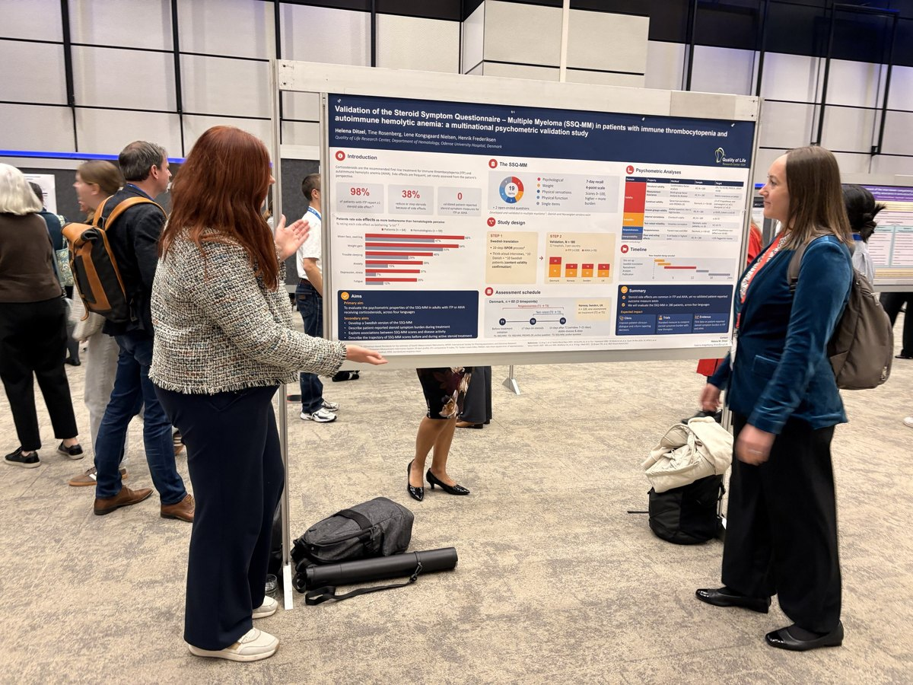

News & events
Meetings, conferences and presentations from QoLRC.
-

Research in Focus at the Department of Hematology
Colleagues from across the Department of Hematology at Odense University Hospital gathered for the annual Research in Focus (Forskning i fokus) afternoon, organized by Henrik Frederiksen. The program covered acute leukemia and hematopathology, lymphoma and cellular therapies, multiple myeloma and amyloidosis, home-based treatment and supportive care, quality of life and population-based research, and benign hematology and frailty. Hans Henrik Knudsen, who is a patient representative in Lene Kongsgaard Nielsen's quality of life research at QoLRC, spoke about the role of patient involvement in research. From QoLRC, Henrik Frederiksen, Pia Pedersen, Tine Rosenberg, Anne Møller Clausen and Klara Rydahl presented their work.
-

SSQ-MM validation study presented at ISOQOL 2026 in Prague
Helena Møgelbjerg Ditzel presented a poster on the multinational psychometric validation of the Steroid Symptom Questionnaire – Multiple Myeloma (SSQ-MM) in patients with immune thrombocytopenia (ITP) and autoimmune hemolytic anemia (AIHA) at the 33rd Annual Conference of the International Society for Quality of Life Research (ISOQOL) in Prague. The study will include 180 patients in Denmark, Norway, Sweden and the United Kingdom, and will also develop a Swedish version of the questionnaire.
-

Quality of life results from the SABLe study presented at the NMSG meeting in Reykjavik
Tine Rosenberg presented the patient-reported outcome results from the phase II SABLe study (NMSG 29/21) at the Nordic Myeloma Study Group meeting in Reykjavik. The study tested an alternating selinexor-based regimen in patients with newly diagnosed multiple myeloma who are not eligible for stem cell transplantation, and patients reported improved quality of life.
-

QoLRC at the Nordic ITP meeting in Oslo
At the Nordic ITP meeting in Oslo on 17–18 April 2026, Henrik Frederiksen presented a case of acquired amegakaryocytic thrombocytopenia after treatment with an immune checkpoint inhibitor as part of neoadjuvant treatment for bilateral breast cancer (BMJ Case Reports, 2025). Helena Møgelbjerg Ditzel presented the SSQ-MM validation study in patients with ITP and AIHA.